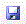

Open: Opens an existing project, i.e., FAN$IER (.FNS) file.

Save: Saves the current project as a FAN$IER (.FNS) file.

Rename Regime: Rename the currently selected Regime within the current project.

Print: sends the contents of the currently selected output Tab to your system's printer.

Print Preview: Opens an on-screen print-preview window displaying the contents of the currently selected output Tab.

Copy: Copies selected text from output Tabs to the Windows Clipboard.

Batch Mode: Opens the Batch Mode dialogue box to configure batch runs.

Return to TIPSY: Returns to current TIPSY session; FAN$IER stays open in the background.

Send to PLOTSY: Sends data from the Results Tab or Sensitivity Tab to PLOTSY for graphing.

View Help: Opens Help.